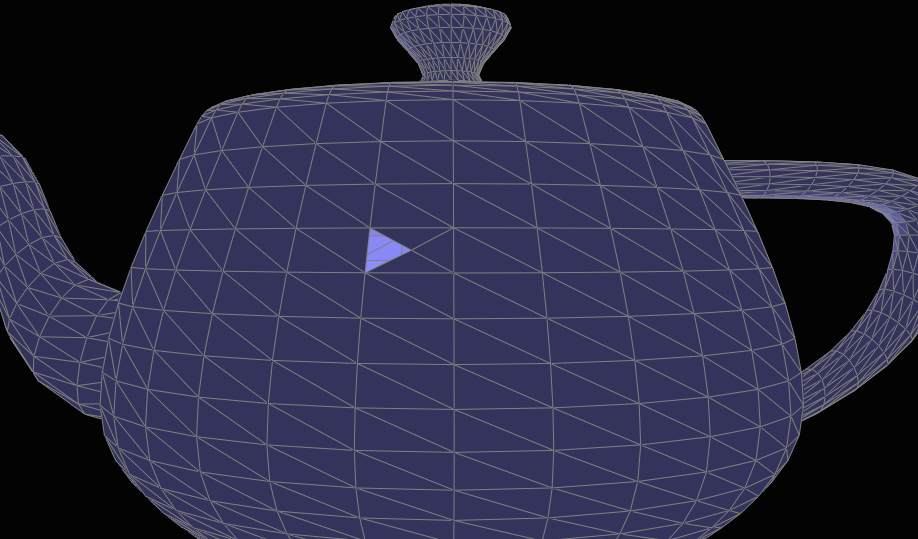

In this project, I worked several techniques used to define and render geometrics in computer graphics. Part 1 defines a bézier patch using 16 control points and tessellate the surface into triangle meshes. Part 2 ~ Part 4 are mainly about modifying and navigating geometric mesh using halfedge data structure. Part 5 uses edge operations defined in previous parts to implement loop subdivion, which upsample the mesh. Part 6 explores the shaders in GLSL, where I implemented Phong shading and environment map reflection shading
Part 1: Fun with Bezier Patches
In this part, I got input of the 16 control points of a 3D Bezier surface. The goal is to evavulate points on this surface and tellesate it into triangles.
In order to evaluate the points on surface, I use 2D de Casteljau Algorithm, where I iteratively apply bilinear interpolation:
Where u,v are the parametric coordinates of the bezier patch. In each iteration, first lerp between b(i,j) and b(i+1, j) as well as b(i,j+1), b(i+1,j+1) using u. Then use another lerp for the two lerped points using v.
I evaluate points using u = {0,1/8,2/8,...,8/8} and v = {0,1/8,2/8,...,8/8} and use them as vertices of the triangles to tesellate the bezier surface.
|
|
Part 2: Average normals for half-edge meshes
This part navigate every neighboring face of a give vertex and assign the average of these face normals as the vertex's normal. This will render a smoother image of a mesh.
The way to visit each adjacent face is starting from one halfedge of the vertex, visit the face associated with this halfedge. Then jump to the next halfedge of the twin halfedge to navigate clockwisely:
 Results:
Results:
|
|
|
|
|
|
Here is an example of how to include a simple formula:
a^2 + b^2 = c^2
or, alternatively, you can include an image of a LaTex formula.
This time it's your job to copy-paste in the rest of the sections :)
Part 3: Edge Flip

In order to flip an edge as above, the pointers that need to be modified/set are: the halfedge pointers of the two faces, vertices b and c; The next pointers of the halfedges and the face pointer of the halfedges. Ignore the request if the edge is on boundary.
At first, I didn't correctly update the faces of the halfedges that are not flipped. So some faces disappears after several flips as follows:
One caveat is that the halfedge always points to the surface on it's left so that ca points to face acd after flipping but ac doesn't. After fixing this bug, I get the following results:
|
|
|
|
|
|
Part 4: Edge Split

Similar to last part except that we need to create 1 new vertex, 3 new edges, 6 new halfedges and 2 new faces and link them to existing elements. Ignore the request if the edge is on boundary.
Bug #1: At first I forgot to set the position of the new vertex m. This leads to each splitting point positioning at an unitialized location, which in the end gives me this result:

|

|
bug #2: I forgot to set the halfedge pointers of the two faces that originally existed. They might point to ab or bd, which no longer holds after splitting:
|

|
Final results:
|
|
|
|
Part 5: Upsampling via Loop Subdivision
This part implement loop subdivision, splitting each triangle into 4 smaller triangles, by flipping and splitting edges. It easier to first calculate the new positions of both old and yet-to-insert vertices and then applying the edge operations.
The formula to update the position is as following:
 pos_old_v = (1 - n*u) * original_position + u * neighbor_position_sum
pos_new_v = 3/8 * (A + B) + 1/8 * (C + D)
pos_old_v = (1 - n*u) * original_position + u * neighbor_position_sum
pos_new_v = 3/8 * (A + B) + 1/8 * (C + D)
I calculate neigbor_position_sum by implementing the centroid of vertex and muliplying thecentroid by n.
Loop subdivion of a cube:

| 
|
We can observe two things:
Observation #1: The sharp corners and edges are rounded out so that the cube looks more sphere-like after subdivison.
We can lessen this effect in two ways: 1) split edges around corners before loop subdivison. This gives a higher resolution to the corners to start with so that the 8 sharp corners are preserved. 2) flip the edges that's connect to the corner vertices. This is when degree = 3, the old vertices are less influenced by its neighbors when updating the position.
Result of splitting edges around corner before subdivision:
Result of splitting as well as flipping edges around corner:
Observation #2: The cube becomes asymmetrical after subdivision. This is because the mesh was not symmetric at start. We can slip as follwing to make it symmetric: